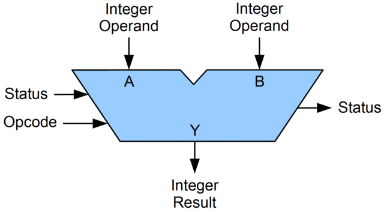

Arithmetic Logic Unit
Facciamo un ulteriore passo avanti verso la comprensione di come funziona nel dettaglio l'elaborazione dei dati in un computer. Nella pagina precedente abbiamo visto che uno dei comandi che può interpretare il processore è add.
Ricordiamo ancora una volta che una delle linee guida più importanti nella progettazione del processore è l'efficienza: operazioni molto comuni come la somma deve essere effettuata nel modo più veloce teoricamente possibile. Per questo motivo è stata ideata un'unità dedicata, chiamata Arithmetic Logic Unit (ALU).

Rappresentazione grafica di una ALU.
Fonte: Lambtron - Own work, CC BY-SA 4.0, Link
L'idea di ALU è stata proposta da von Neumann stesso insiema al primo computer, EDVAC. La prima implementazione su circuito integrato è del 1967.
Come funziona in pratica? L'ALU all'interno ha un circuito disegnato appositamente per fare alcune operazioni logiche (es. AND, OR, NOT, XOR) e matematiche (es. somma di binari, complemento a due). Esiste un progetto su Minecraft che spiega nel dettaglio come è possibile realizzare un ALU completamente funzionante usando le pietre rosse (Redstone) e relativi componenti. Un video di una ALU realizzata in pietra rossa è disponibile qui.
Somma di interi
La somma di interi in binario funziona esattamente come la somma in decimale che abbiamo imparato alle elementari, con la sola differenza che:
- abbiamo solo due simboli disponibili
0e1(non dieci) - il riporto deve essere fatto quando si supera il valore
1(e non9)
Ad esempio:
// Quanto fa 6+5?
2 --converto in binario--> 10
3 --converto in binario--> 11
// 1. Metto i numeri in colonna
10 +
11 =
------
// 2. Sommo la colonna più a destra
10 +
11 =
------
1
// 3. Passo alla colonna successiva: 1+1 fa 0 col riporto di 1
10 +
11 =
------
101 --converto in decimale--> 5 OK, ci torna!
Rappresentazione dei numeri negativi
Come rappresentiamo i numeri negativi? Ricordiamoci che il processore capisce solo 0 e 1, quindi non abbiamo modo di scrivere il segno "-" davanti ad un numero.
Una soluzione che sembra semplice, ed è stata utilizzata nei primi anni dell'informatica (anni '50 e '60 del secolo scorso) è quella di usare il primo bit del numero come segno. Questo rappresentazione è chiamata complemento a uno. Ipotizziamo di avere una rappresentazione del nostro numero binario a 4 bit:
// Primo bit 0, numero positivo
0101 --> +5
// Primo bit 1, numero negativo
1101 --> -5
Questa rappresentazione ha diversi inconvenienti, principalmente:
- non è semplicissimo matematicamente fare somme
- il valore 0 ha due rappresentazioni:
0000e1000
Complemento a due
Attualmente tutti i processori e relative ALU utilizzano un altro sistema, chiamata complemento a due. Per rappresentare un numero negativo, si usano i seguenti passi:
- prendo il valore positivo
- inverto tutti i bit
- sommo 1
Esempio:
// Voglio rappresentare il numero -5
// 1. prendo il valore positivo
0101
// 2. inverto i bit
1010
// 3. aggiungo 1
1011
Quindi la rappresentazione di -5 in complemento a due è 1011.
Per tornare da rappresentazione binaria in complemento a due a decimale, basta fare l'operazione inversa:
// Quanto vale 1001?
// 1. sottraggo 1
1000
// 2. inverto i bit
0111 --> +7
// 3. cambio di segno
+7 --> -7
Somma con numeri negativi
In questo modo fare le somme tra numeri è "gratis": basta che eseguo la somma come abbiamo visto poco fa, trasformando la differenza in una somma.
// Quanto fa 7-5?
// La sottrazione può essere riscritta come: 7+(-5)
// Converto i numeri in binario
7 --> 0111
-5 --> 1011
// Eseguo la somma
0111 +
1011 =
------
0010 --> +2 OK, ci torna!
Per approfondimenti ed esercizi, vi consiglio di consultare questo tutorial.